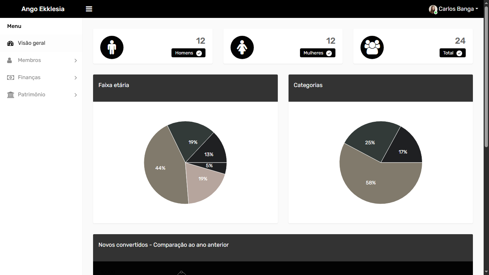

Olá, eu sou Carlos Miguel Banga
Desenvolvedor FullStack
Desenvolvedor de software com foco em aplicações web, actuando no desenvolvimento de sistemas escaláveis e orientados a soluções práticas para contextos reais. Possui experiência na construção de plataformas como sistemas de gestão (eclesiástico, hospitalar e institucional), aplicações SaaS multi-tenant e projetos interativos voltados ao aprendizado técnico. Perfil orientado à resolução de problemas, com forte iniciativa na criação de projetos próprios para evolução técnica, aplicando boas práticas de desenvolvimento, organização de código e foco na experiência do utilizador.
Habilidades & Tecnologias

HTML5
Avançado · 90%
CSS3
Intermediário · 67%
BootStrap
Intermediário · 67%
JavaScript
Intermediário · 77%
TypeScript
Intermediário · 77%
React.JS
Intermediário · 65%
React Native
Intermediário · 51%
Node.JS
Intermediário · 65%
PHP
Intermediário · 65%Minhas Experiências
Desenvolvedor FullStack
Projectos pessoais
Desenvolvimento contínuo de projetos práticos com o objetivo de aprimorar competências técnicas, fortalecer a capacidade de resolução de problemas e consolidar boas práticas no desenvolvimento de software.
Desenvolvedor FullStack
Freelancer
Desenvolvimento de um sistema de gestão eclesiástico com o objetivo de optimizar a administração da igreja, automatizar processos manuais e reduzir a ocorrência de erros operacionais.
Desenvolvedor FullStack
Freelancer
Desenvolvimento de um sistema de gestão de visitas integrado a um portal digital, permitindo que cidadãos angolanos agendem visitas a instituições como hospitais, prisões e lares de idosos de forma remota, proporcionando maior comodidade, organização e eficiência no processo.
Projectos em Destaque

Sistema De Gestão Eclesiático
Sistema web voltado à administração de igrejas, permitindo o gerenciamento de membros, eventos, contribuições e atividades internas, com foco na organização, centralização de dados e automação de processos administrativos.

Sistema De Gestão Hospitalar
Sistema web para gestão hospitalar, com funcionalidades para controle de pacientes, agendamentos, atendimentos, prontuários e setores administrativos, visando otimizar fluxos operacionais, reduzir erros e melhorar a eficiência no atendimento.

Banga Query
Mini rede social gamificada focada no aprendizado de SQL, onde os usuários resolvem desafios práticos, competem entre si e evoluem em níveis de dificuldade, promovendo o desenvolvimento de habilidades em banco de dados de forma interativa e colaborativa.

Ango Ekklesia
Micro SaaS voltado à gestão de igrejas, oferecendo funcionalidades para controle de patrimônio, finanças e membros, com foco em escalabilidade, multi-tenancy e acessibilidade, permitindo que diferentes igrejas utilizem a plataforma de forma independente e eficiente.
Vamos trabalhar juntos
Localização
Luanda, Angola
carlosbanga322@gmail.com
GITHUB
@DEV-CARLOS-BANGA
@carlos-banga-0844ba336
Estou sempre aberto a novos projetos e oportunidades de colaboração. Seja um website, app ou sistema complexo — vamos construir algo incrível juntos.